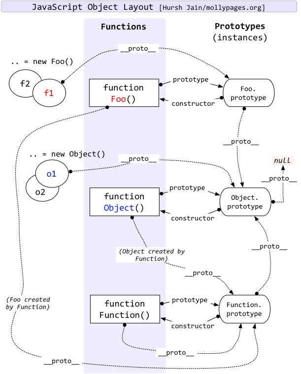
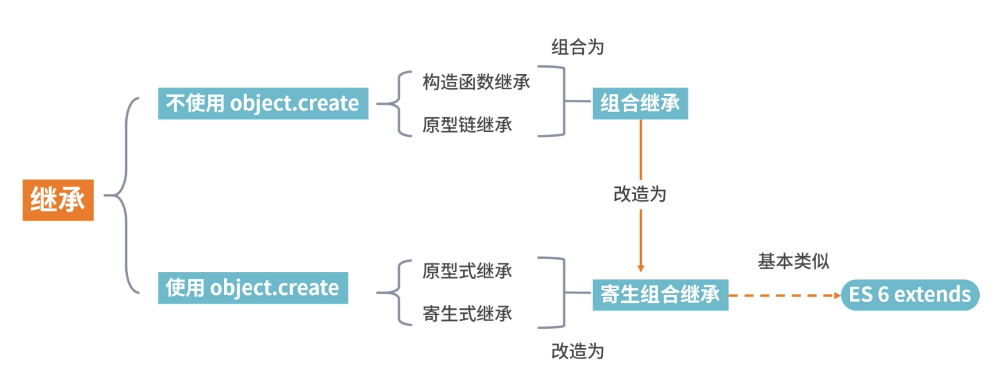

对JS的继承有更深一步的理解，可以轻松掌握和JS继承相关的问题。
问题1：
JS的继承到底有多少种实现方式？问题2：
ES6的extends关键字是用哪种继承方式实现的？原型与原型链
原型、原型链相等关系理解
首先我们要清楚明白两个概念：
-
1.js分为函数对象和普通对象，每个对象都有__proto__属性，但是只有函数对象才有prototype属性
-
2.Object、Function都是js内置的函数, 类似的还有我们常用到的Array、RegExp、Date、Boolean、Number、String
那么__proto__和prototype到底是什么，两个概念理解它们
-
3.属性__proto__是一个对象，它有两个属性，constructor和__proto__；
-
4.原型对象prototype有一个默认的constructor属性，用于记录实例是由哪个构造函数创建；
function Person(name, age){
this.name = name;
this.age = age;
}
Person.prototype.motherland = 'china'
let person01 = new Person('小明', 18);
js之父在设计js原型、原型链的时候遵从以下两个准则
// **准则1：原型对象（即Person.prototype）的constructor指向构造函数本身**
1. Person.prototype.constructor == Person
// **准则2：实例（即person01）的__proto__和原型对象指向同一个地方**
2. person01.__proto__ == Person.prototype
记住以上四个概念两个准则，任何原型链相等判断都能判断正确；

// 从上方 function Foo() 开始分析这一张经典之图
function Foo()
let f1 = new Foo();
let f2 = new Foo();
f1.__proto__ = Foo.prototype; // 准则2
f2.__proto__ = Foo.prototype; // 准则2
Foo.prototype.__proto__ = Object.prototype; // 准则2 (Foo.prototype本质也是普通对象，可适用准则2)
Object.prototype.__proto__ = null; // 原型链到此停止
Foo.prototype.constructor = Foo; // 准则1
Foo.__proto__ = Function.prototype; // 准则2
Function.prototype.__proto__ = Object.prototype; // 准则2 (Function.prototype本质也是普通对象，可适用准则2)
Object.prototype.__proto__ = null; // 原型链到此停止
// **此处注意Foo 和 Function的区别， Foo是 Function的实例**
// 从中间 Function Object()开始分析这一张经典之图
Function Object()
let o1 = new Object();
let o2 = new Object();
o1.__proto__ = Object.prototype; // 准则2
o2.__proto__ = Object.prototype; // 准则2
Object.prototype.__proto__ = null; // 原型链到此停止
Object.prototype.constructor = Object; // 准则1
Object.__proto__ = Function.prototype // 准则2 (Object本质也是函数)；
// 此处有点绕，Object本质是函数，Function本质是对象
Function.prototype.__proto__ = Object.prototype; // 准则2 (Function.prototype本质也是普通对象，可适用准则2)
Object.prototype.__proto__ = null; // 原型链到此停止
// 从下方 Function Function()开始分析这一张经典之图
Function Function()
Function.__proto__ = Function.prototype // 准则2
Function.prototype.constructor = Function; // 准则1
原型、原型链的意义何在
原型对象的作用，是用来存放实例中共有的那部份属性、方法，可以大大减少内存消耗。
console.log(person01)
打印person01， 他有自己属性 name = ‘小明’，age = 18; 同时通过原型链关系，他有属性motherland = ‘china’；
我们再创建person2实例
let person02 = new Person('小花', 20);
console.log(person02)
打印person02， 他有自己属性 name = ‘小花’，age = 20; 同时通过原型链关系，他有属性motherland = ‘china’；原型对象存放了person01、person02共有的属性所属国motherland = ‘china’. 我们不用在每个实例上添加motherland 属性，而是将这一属性存在他们的构造函数原型对象上，对于人类Person这样的构造函数。
相同的属性、方法还有很多很多，比如我们是黑头发，我们都有吃，睡这样一个方法，当相同的属性、方法越多，原型、原型链的意义越大。
Person.prototype.hairColor = 'black';
Person.prototype.eat = function(){
console.log('We usually eat three meals a day.')
}
console.log(person01)
console.log(person02)
打印person01、person02，他们有了属性hairColor和eat方法；
实例们动态的获取Person构造函数之后添加的属性、方法，这是就是原型、原型链的意义所在！可以动态获取，可以节省内存。
另外我们还要注意：如果person01将头发染成了黄色，那么hairColor会是什么呢？
person01,hairColor = 'yellow';
console.log(person01)
console.log(person02)
person01的hairColor = ‘yellow’， 而person02的hairColor = ‘black’；
实例对象重写原型上继承的属性、方法，相当于“属性覆盖、属性屏蔽”，这一操作不会改变原型上的属性、方法，自然也不会改变由统一构造函数创建的其他实例。
只有修改原型对象上的属性、方法，才能改变其他实例通过原型链获得的属性、方法。
继承的几种实现

原型链继承
原型链继承是比较常见的继承方式之一，其中涉及构造函数、原型和实例
- 每一个构造函数都有一个原型对象
- 原型对象又包含一个指向构造函数的指针
- 而实例则包含一个原型对象的指针
function Parent1() {
this.name = 'parent1';
this.play = [1, 2, 3]
}
function Child1() {
this.type = 'child1';
}
Child1.prototype = new Parent1();
console.log(new Child1());
var s1 = new Child1();
var s2 = new Child1();
s1.play.push(4);
console.log(s1.play, s2.play); // 引用类型，内存空间共享的，当一个发生变化，另外一个也随之进行变化
构造函数继承（借助call）
function Parent1() {
this.name = 'parent1';
}
Parent1.prototype.getName = function (){
return this.name;
}
function Child1() {
Parent1.call(this);
this.type = 'child1';
}
let child = new Child1();
console.log(child); // 没问题
console.log(child.getName()); // 会报错，只能继承父类的实例属性或者方法，不能继承原型属性或者方法
组合继承（前两种组合）
function Parent3() {
this.name = 'parent3';
this.play = [1, 2, 3];
}
Parent3.prototype.getName = function (){
return this.name;
}
function Child3() {
// 第二次调用Paernt3()
Parent3.call(this);
this.type = 'child3';
}
// 第一次调用Parent3()
Child3.protptype = new Parent3();
// 手动挂上构造器，指向自己的构造函数
Child3.protptype.constructor = Child3;
var s3 = new Child3();
var s4 = new Child3();
s3.play.push(4);
console.log(s3.play, s4.play); // 不互相影响
console.log(s3.getName()); // 正常输出'parent3'
console.log(s4.getName()); // 正常输出'parent3'
原型式继承
let parent4 = {
name: 'parent4',
friends: ['p1', 'p2', 'p3'],
getName: function() {
return this.name;
}
};
let person4 = Object.create(parent4);
person4.name = 'tom';
person4.friends.push('jerry');
let person5 = Object.create(parent4);
person5.friends.push('lucy');
console.log(person4.name);
console.log(person4.name === person4.getName());
console.log(person5.name);
console.log(person4.friends);
console.log(person5.friends);
寄生式继承
使用原型式继承可以获得一份目标对象的浅拷贝，然后利用这个浅拷贝的能力再进行增强添加一些方法
寄生式继承相比于原型式继承，还是在父类基础上添加了更多的方法
let parent5 = {
name: 'parent4',
friends: ['p1', 'p2', 'p3'],
getName: function() {
return this.name;
}
};
function clone(original) {
let clone = Object.create(original);
clone.getFriends = function() {
return this.friends;
}
return clone;
}
let person5 = clone(parent5);
console.log(person5.getName());
console.log(person5.getFriends());
寄生组合式继承
最优的继承方式
function clone(parent, child)) {
// 这里改用Object.create就可以减少组合继承中多进行一次构造的过程
child.prototype = Object.create(parent.prototype);
child.prototype.constructor = child;
}
function Parent6() {
this.name = 'parent6';
this.play = [1, 2, 3];
}
Parent6.prototype.getName = function() {
return this.name;
}
function Child6() {
Parent6.call(this);
this.friends = 'child5';
}
clone(Parent6, Child6);
Child6.prototype.getFriends = function() {
return this.friends;
}
let person6 = new Child6();
console.log(person6);
console.log(person6.getName());
console.log(person6.getFriends());
ES6的 extends 关键字实现逻辑
使用关键词很容易直接实现JavaScript的继承，但是如果深入了解extends语法糖是怎么实现
class Person {
constructor(name) {
this.name = name
}
// 原型方法
// 即 Person.prototype.getName = function() {}
// 下面可简写为getName() {...}
getName = function() {
console.log('Person:', this.name);
}
}
class Gamer extends Person {
constructor(name, age) {
// 子类中存在构造函数，则需要在使用“this”之前首先调用super()。
super(name)
this.age = age
}
}
const asuna = new Gamer('Asuna', 20)
asuna.getName() // 成功访问到父类的方法
编译后代码就是寄生组合式继承